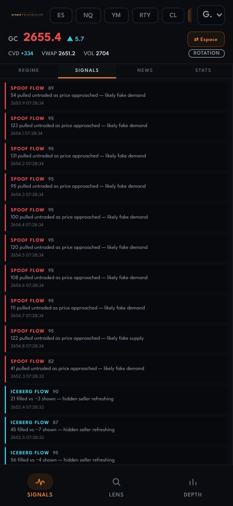

Ton terminal.
DONNÉES D'EXEMPLE
Ta formation.
Bonsoir, Alex
Où veux-tu aller ?
2651.9
GC · temps réel
Terminal
Pressure, DOM, CVD, Footprint, Copilot IA
64%
14/22 leçons
Formation
Cours, exercices, communauté
Bonsoir,
Alex
🔥 6j de suite
REPRENDRE
Jour 3 — Structure du marché (les bases)
Masterclass XAUUSD Gold
0
LEÇONS
0
STREAK
0%
COMPLÉTÉ
Mes cours
Masterclass XAUUSD Gold
9 / 15 leçons
Les EMA 9, 21 & 50
5 / 8 leçons

SWEEPFLOW
76
110 aggressive buys swept 4 ticks of book
DONNÉES D'EXEMPLE
Lis le marché.
Apprends.
Ton terminal.Ta formation.Enfin dans ta poche
kmmterminal.com